专题4.2 角（举一反三讲义）
【北师大版2024】

【题型1 角的概念】 2
【题型2 钟面角】 3
【题型3 方位角】 4
【题型4 度分秒的换算】 5
【题型5 与角平分线的有关计算】 6
【题型6 角的大小比较】 7
【题型7 尺规作角】 8
【题型8 与余角或补角有关的计算】 9
【题型9 同（等）角的余（补）角相等的应用】 9
【题型10 角n等分线的有关计算】 11
【题型11 三角板中的角度计算】 12
【题型12 旋转成动角问题】 13
 知识点1 角的概念
知识点1 角的概念
1. 角的静态定义：有公共端点的两条射线组成的图形叫作角，这个公共端点是角的顶点，这两条射线是角的两条边．
2. 角的动态定义：角也可以看作由一条射线绕着它的端点旋转而形成的图形．当射线的终止位置和起始位置成一条直线时，形成平角，继续旋转，当射线的终止位置和起始位置重合时，形成周角．

知识点2 角的表示方法
角的常用表示方法有四种
1. 用三个大写字母来表示
在这种表示法中，表示顶点的字母必须写在中间，另两个字母不分顺序．如图（1）中的角有∠AOB，∠BOC，∠AOC．
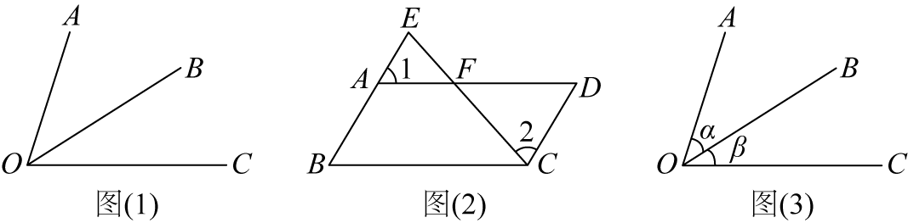
2. 用一个大写字母来表示
在这种表示法中，表示角的大写字母必须是表示顶点的那个字母，且当两个或两个以上的角有同一个顶点时，不能用这种方法来表示其中的任何一个角．如图(2)中的∠EBC也可以表示为∠B，∠ADC也可以表示为∠D，但∠EAF，∠BAF都不能用∠A来表示．
3. 用一个数字来表示
用数字表示角时，要在角的内部靠近顶点处加上弧线，弧线旁边写上数字．如图（2）中的∠EAF也可以表示为∠1，∠ECD(∠FCD)也可以表示为∠2．
4. 用一个小写希腊字母α，β等来表示
这种方法同用数字表示角的方法类似，也是在角的内部靠近顶点处加上弧线，弧线旁边写上小写希腊字母．如图（3）中的∠AOB也可以表示为∠α．
【题型1 角的概念】
【例1】（1）图中可以用一个大写字母表示的角有 ；
（2）以A为顶点的角有 ；
（3）图中一共 个角（不包括平角）．
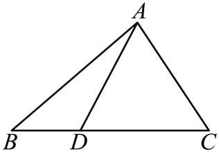
【变式1-1】（2025·河北·一模）如图，若∠AOC=90°，则边OC可能经过的点为（ ）
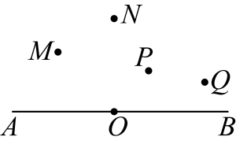
A．M B．N C．P D．Q
【变式1-2】如图所示，是一副三角尺，上边三角尺的三个角分别为45°，45°，90°，下边三角尺的三个角分别为30°，60°，90°，那么，在①15°；②55°；③75°；④105°中，可以用这副三角尺画出来的是（ ）
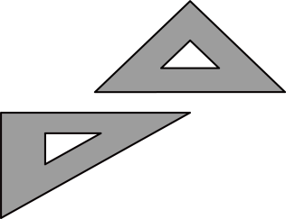
A．①③ B．①④ C．②③④ D．①③④
【变式1-3】如图，在从同一点出发的七条射线OA、OB、OC、OD、OE、OF、OG组成的图形中，共有 个锐角．
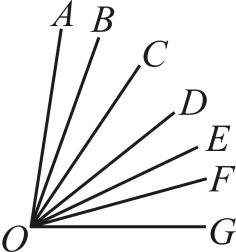
【题型2 钟面角】
【例2】（25-26九年级上·广东汕头·阶段练习）从6点15分到6点30分，分针旋转的度数为（ ）
A．15° B．30° C．60° D．90°
【变式2-1】（25-26七年级上·全国·课后作业）（1）时钟4：50，时针与分针所夹的角是 °．
（2）如图，此时钟面上的时间是10时40分，到11时，时针走过的度数是 ．

【变式2-2】（25-26七年级上·全国·周测）如图，2时20分，钟表的时针与分针之间所成的较小角的度数是多少？再过1小时，时针与分针之间所成的较小角的度数是多少？时针转动的度数是多少？

【变式2-3】小明去看电影，他在影片刚放映时看了一下手表，影片结束时又看了一下手表，他发现两次看手表的时刻，时针和分针刚好交换了一次，已知这部电影的时间在1−2小时之间，则影片片长为 分钟．
知识点3 方位角
方位角：以正北、正南方向为基准，描述物体运动的方向，即正北、正南方向与物体运动方向的夹角为方位角．
【题型3 方位角】
【例3】（24-25六年级下·山东淄博·期中）如图，射线OA的方向为南偏西20°，若∠AOB=70°，则射线OB的方向为 ．
【变式3-1】（24-25七年级上·江苏泰州·开学考试）一次台风的大致路径如下图：

（1）台风生成后，先是沿着正( )方向移动了( )km，然后沿( )( )°方向移动了( )km，到达了A市．
（2）接着，台风又改变方向，沿( )( )°方向移动了( )km，到达了B市．
【变式3-2】有公共顶点的两条射线分别表示南偏东15°与北偏东25°，则这两条射线组成的角的度数为（ ）
A．140° B．130° C．120° D．115°
【变式3-3】如图，已知∠AON=15°，∠BON=40°，OA是∠BOC的平分线，OD⊥OB，则（ ）
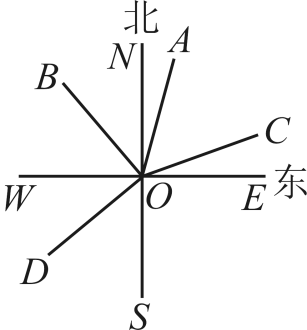
A．射线OC的方向为东偏北25°
B．射线OC的方向为北偏东65°
C．射线OD的方向为西偏南45°
D．射线OD的方向为南偏西50°
知识点4 角的度量单位
1. 角度制的概念：以度、分、秒为单位的角的度量制，叫作角度制．
2. 角的换算：1°=60′，1′=60″；1′=160°，1″=160′．
1直角=90°，1平角=180°，1周角=360°．
【题型4 度分秒的换算】
【例4】若∠α=30.2°，则∠α的余角用度、分、秒表示为（ ）
A．59°8′ B．59°4′8″ C．59°48′ D．59°48″
【变式4-1】（25-26七年级上·全国·课后作业）计算：
(1)33°15'16''×5．
(2)180°−34°54'+21°33'．
(3)119°57'+32°41'−70°25'13''．
(4)72°35'÷2+18°33'×4．
【变式4-2】学习了角的常用度量单位后，乐乐发现度、分、秒之间可以相互换算，乐乐计算出某一时刻闹钟的时针和分针的夹角是108000″，此时这个夹角等于（ ）
A．5° B．15° C．30° D．60°
【变式4-3】（24-25七年级上·天津西青·期末）在同一平面内有∠AOB=70∘52′，∠BOC=35∘20′，则∠AOC的度数是（ ）
A．106∘12′ B．35∘32′ C．106∘12′或35∘32′ D．105∘72′或35∘32′
知识点5 角的平分线
1. 角的平分线：一般地，从一个角的顶点出发，把这个角分成两个相等的角的射线，叫作这个角的平分线．若OC是∠AOB的平分线，则∠AOC=∠BOC=12∠AOB．反之，若∠AOC=∠BOC=12∠AOB，则OC 是∠AOB 的平分线．
2. 角的n等分线：类似角的平分线，若从角的顶点引出的（n−1）条射线，将这个角分成相等的n个角，则这（n−1）条射线叫作这个角的n等分线．
【题型5 与角平分线的有关计算】
【例5】（25-26七年级上·全国·课后作业）如图，∠AOD=120°，OC平分∠AOD，OB平分∠AOC，下列结论：①∠AOC=∠COD；②∠COD=2∠BOC；③∠AOB与∠COD可以拼成一个直角；④∠AOC与∠AOD可以拼成一个平角，正确的个数有（ ）

A．1个 B．2个 C．3个 D．4个
【变式5-1】（24-25七年级上·全国·课后作业）如图，已知∠ABP+∠PBC=90°，∠CBD=30°，BP平分∠ABD，则∠ABP= ．

【变式5-2】如图，OM平分∠AOB，ON平分∠COD．若∠MON=80°,∠BOC=50°，则∠AOD的度数为 ．

【变式5-3】（24-25七年级上·陕西西安·期末）如图，在∠AOC中，射线OE平分∠AOC，连接OB，射线OF平分∠BOC．

(1)若∠AOB是直角，∠BOC=70°，求∠EOF的度数；
(2)若∠AOC+∠EOF=170°，∠BOC=80°，则∠COE是多少度？
知识点6 角的比较
1. 叠合法：把要比较的两个角的一条边叠合在一起，通过观察另一条边的位置比较两个角的大小．

2. 度量法：用量角器量出角的度数，再根据度数比较角的大小．
【题型6 角的大小比较】
【例6】如图，正方形的网格纸上每个小正方形的边长都为1，则下列结论正确的是（ ）
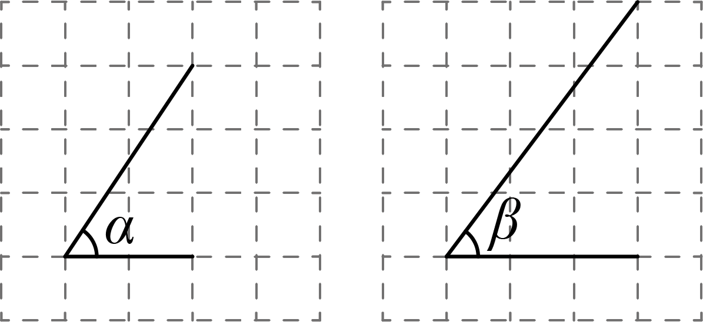
A．∠α<∠β B．∠α>∠β C．∠α=∠β D．无法判断
【变式6-1】
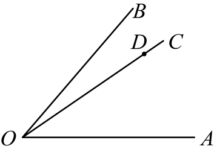
（1）因为OA与OA是公共边，边OC在∠AOB的 ，所以∠AOC ∠AOB；
（2）因为OA与OA是公共边，边OD与边OC叠合，所以∠AOC ∠AOD；
（3）因为OB与OB是公共边，边OA在 的 ，所以∠BOC ∠BOA．
【变式6-2】如图所示表示两块三角板．

（1）用叠合法比较∠1，∠α，∠2的大小；
（2）量出图中各角的度数，并把图中的6个角从小到大排列，然后用“＜”或“＝”连接．
【变式6-3】（24-25七年级上·四川自贡·期末）若∠1=38°15′，∠2=38.15°，∠3=38.25°，则下面说法正确的是（ ）
A．∠1=∠2 B．∠2=∠3
C．∠1=∠3 D．∠1，∠2，∠3互不相等
【题型7 尺规作角】
【例7】如图，已知两个角∠1和∠2，求作一个角∠3=∠1+2∠2．

【变式7-1】如图，点C在∠AOB的边OB上，用尺规作出了CN∥OA，作图痕迹中弧FG是（ ）
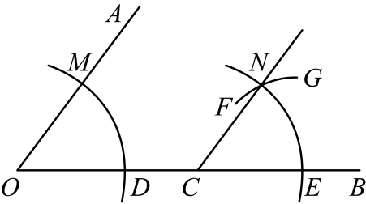
A．以点C为圆心，OD长为半径的弧
B．以点C为圆心，DM长为半径的弧
C．以点E为圆心，OD长为半径的弧
D．以点E为圆心，DM长为半径的弧
【变式7-2】如图，已知∠AOB与∠EO′F，分别以O，O′为圆心，以同样长为半径画弧，分别交OA，OB于点A′，B′，交O′E，O′F于点E′，F′．以B′为圆心，以E′F′长为半径画弧，交弧A′B′于点H，下列结论不正确的是（ ）

A．∠AOB=2∠EO′F B．∠AOB>∠EO'F
C．∠HOB=∠EO′F D．∠AOH=∠AOB−∠EO′F
【变式7-3】如图为一副三角尺，其中∠α=60°,∠β=45°，作∠ABC=120°,∠DEF=15°．
（要求：尺规作图，保留作图痕迹，不写作法）

【题型8 角n等分线的有关计算】
【例8】（24-25七年级下·重庆·开学考试）如图1，已知∠AOB=120°，∠COD=60°，OM在∠AOC内，ON在∠BOD内，∠AOM=13∠AOC，∠BON=13∠BOD．（本题中所有角均大于0°且小于等于180°）
(1)∠COD从图1中的位置绕点O逆时针旋转到OC与OB重合时，如图2，则∠MON=____°；
(2)∠COD从图2中的位置绕点O顺时针旋转n°（0<n<180且n≠60a，其中a为正整数），直接写出所有使∠MON=2∠BOC的n值．
【变式8-1】如图所示，若点A，O，B在一条直线上，OM平分∠AOC，∠BON:∠CON=1:4，当∠AOM=20°时，∠CON等于（ ）

A．112° B．132° C．28° D．140°
【变式8-2】如图，射线OC在∠AOB的内部，图中共有3个角：∠AOB，∠AOC和∠BOC，若其中有一个角的度数是另一个角度数的两倍，则称射线OC是∠AOB的“平衡线”.若∠AOB=78°，且射线OC是∠AOB的“平衡线”，则∠AOC的度数为 ．

【变式8-3】如图1，直线AB与CD相交于点O，使∠BOC=120°．将一直角三角尺的直角顶点放在O处，即∠MON=90°．
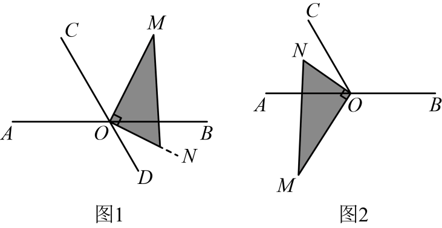
(1)当三角尺一边OM在∠BOC的内部，且为∠BOC的三等分线，求∠BON的度数？
(2)当三角尺一边ON在∠AOC的内部（图2），求∠AOM−∠CON的值？
【题型9 三角板中的角度计算】
【例9】如图，将一副直角三角板的直角顶点C叠放在一起．
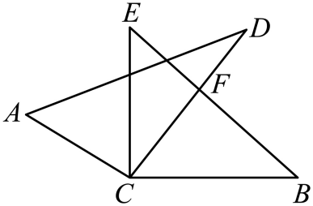
(1)若∠DCE=35°，则∠BCA= ；
(2)若∠ACB=150°，则∠DCE= ；
(3)若∠DCE:∠ACB=2:7，求∠DCE的度数．
【变式9-1】将一副三角板中的两块直角三角尺的直角顶点C按如图方式叠放在一起，则∠ACB+∠ECD= ．
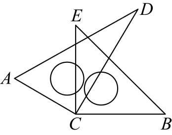
【变式9-2】（25-26八年级上·全国·阶段练习）如图，把一个三角尺的直角顶点D放置在△ABC内，使它的两条直角边DE，DF分别过点B，C，如果∠A=40°，那么∠ABD+∠ACD的度数是（ ）

A．50° B．60° C．70° D．40°
【变式9-3】（24-25七年级上·河南开封·期末）如图，将一副三角尺叠放在一起，使它们的直角顶点重合．

(1)若∠DCE=35°，求∠ACB的度数；
(2)若∠ACB=140°，求∠DCE的度数；
(3)猜想∠ACB与∠DCE之间的数量关系，并说明理由．
【题型10 旋转成动角问题】
【例10】（24-25七年级上·湖南岳阳·期末）已知，OC是∠AOB内部的一条射线，且∠AOB=3∠AOC．

(1)如图1所示，若∠AOB=120°，OM平分∠AOC，ON平分∠AOB，求∠MON的度数；
(2)如图2所示，∠AOB是直角，从点O出发在∠BOC内引射线OD，满足∠BOC−∠AOC=∠COD，若OM平∠COD，求∠BOM的度数；
(3)如图3所示，若∠AOB=150°，射线OP，射线OQ分别从OC,OB出发，并分别以每秒1D和每秒20的速度绕着点O逆时针旋转，OP和OQ分别只在∠AOC和∠BOC内部旋转，运动时间为t秒．当∠AOP=13∠QOP，求t的值．
【变式10-1】如图，OE⊥AB于点O，∠COE=15°，射线OM从OA出发，绕点O以每秒60°的速度顺时针向终边OB旋转，当OM到达OB时停止旋转.
（1）∠AOC的度数为 .
（2）当OM旋转了 秒时，∠MOC=105度.
【变式10-2】（24-25七年级上·河北沧州·期中）如图1，点A，O，B依次在直线MN上；如图2，现将射线OA绕点O沿顺时针方向以每秒2°的速度旋转，同时射线OB绕点O沿逆时针方向以每秒4°的速度旋转，设旋转时间为t秒（0≤t≤90）．下列说法正确的是（ ）

A．当t值为10秒时，∠AOB=100°
B．整个运动过程中，不存在∠AOB=90°的情况
C．当∠AOB=60°时，两射线的旋转时间t一定为20秒
D．当t值为36秒时，射线OB恰好平分∠MOA
【变式10-3】（24-25七年级上·四川成都·期末）点O是直线AB上的一点，射线OC从OA出发绕点O顺时针方向旋转，旋转到OB停止，设∠AOC=α0°≤α≤180°，射线OD⊥OC，作射线OE平分∠BOD．

(1)如图1，若α=40°，且OD在直线AB的上方，求∠DOE的度数．
(2)射线OC顺时针旋转一定的角度得到图2，当射线OD在直线AB的下方时，其他条件不变，请你用含α的代数式表示∠DOE的度数．
(3)射线OC从OA出发绕点O顺时针方向旋转到OB，在旋转过程中你发现∠DOE与∠AOC（0°≤∠AOC≤180°，0°≤∠DOB≤180°）之间有怎样的数量关系？请你直接用含α的代数式表示∠DOE的度数．